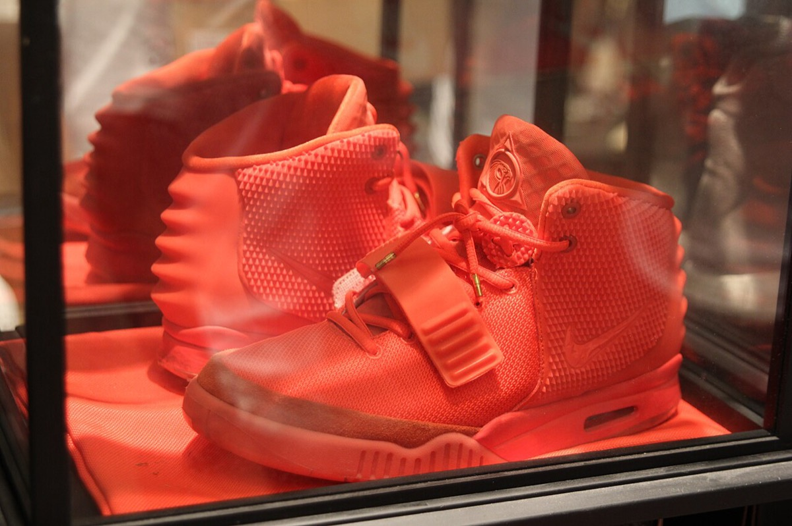
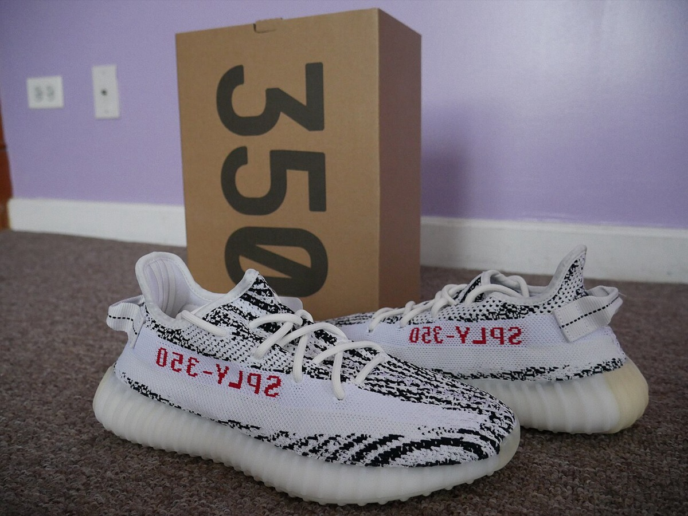
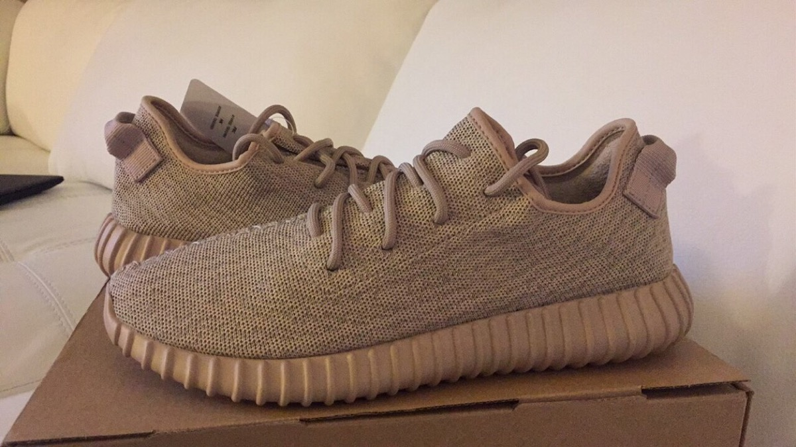
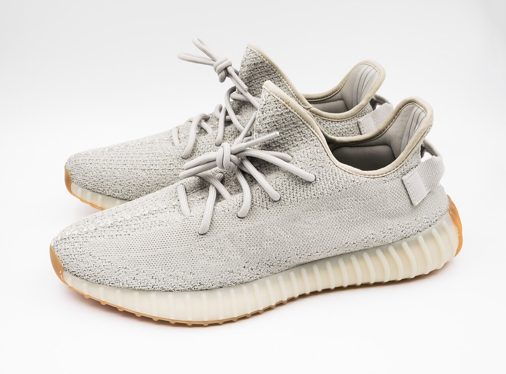
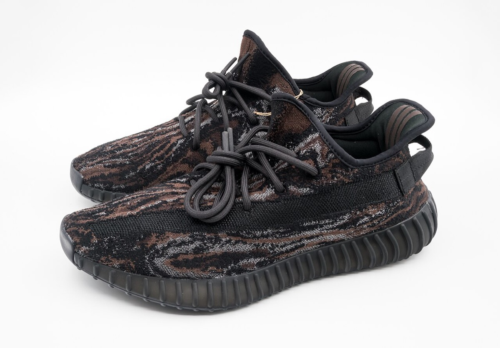
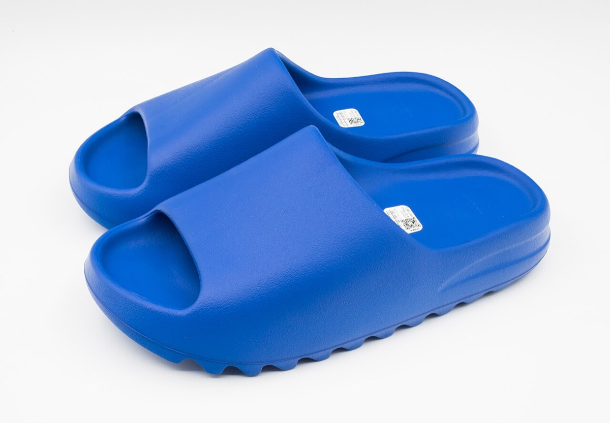
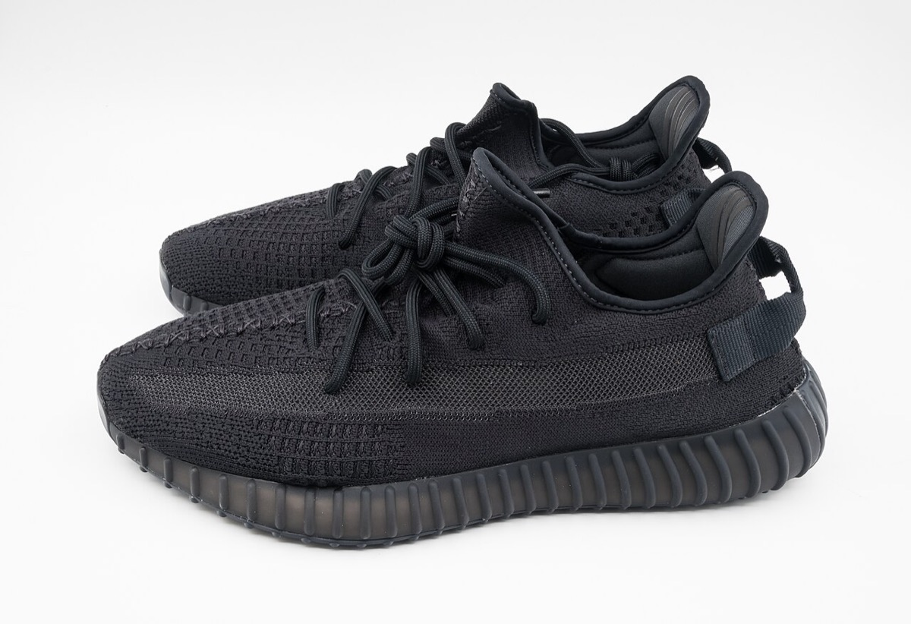
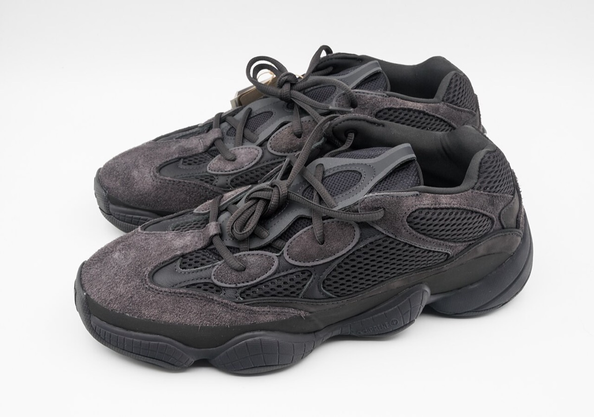

home / people / カニエ・ウェスト
カニエ・ウェスト — 音楽から Yeezy、契約一斉解消まで
Kanye West / Ye 1977.6.8 – ／音楽家・Yeezy 創業者（法的氏名 Ye、2021-10-18）
Yeezy adidas ヒップホップ
ファッション 創業 シカゴ
読者が決める対象は二つである。第一に、本人の発言を理由に adidas が提携を切ったとき、Yeezy の売上依存度が無視できる水準だったのかを測れる。第二に、2013年のロイヤリティ選好が本人の推定純資産を提携評価へ集中させたのかについて、公開データで言える範囲と判定に不足するデータを確認できる。
作成日 2026年9月26日。再設計 2026年11月11日。存命かつ論争的な人物であるため、出典のない私生活・人物評・病状の推測は書かない。健康状態は本人の公開発言と公的報道（入院の事実）に限る。反ユダヤ主義的発言は要約のみとし、分析は契約解消・売上・在庫の数字で行う。年表の満年齢は生年月日1977年6月8日からの年差で算出している。法的改名は2021年10月18日である。
① 概要Overview
生年月日
1977.6.8Atlanta / Chicago育ち
Grammy
24回Recording Academy
Forbes純資産（2020）
$1.3B約1,400億円。うちYeezy $1.26B（約1,300億円）
終了後Forbes
約$400M約530億円。提携評価約$1.5B（約2,000億円）取消
先に結論を書く。
主張1は支持である。 本人は2022年10月、Drink Champs で adidas に切れない旨を述べた。同月25日、adidas は hate speech を理由に提携を即時終了し、支払を停止した。終了前の Yeezy 売上比率はアナリスト推計で約4–8%（Cowen）または約7–8%（Baird 等）であり、一次の確定比率ではない。adidas は2022年純利益への短期影響を最大€250M（約350億円）と開示し、2022年末の Yeezy 在庫は約€0.4B（約550億円）だった。依存度が無視できるから切れた、という説明は棄却される。49 5 8 10
主張2は判定不能である。 2013年 Hot 97 で本人はロイヤリティを理由に adidas を選んだと述べた。2020年 Forbes では純資産 $1.3B のうち Yeezy 持分が $1.26B を占め、提携に集中していた。2022年終了後、Forbes は提携評価約 $1.5B を取り消し約 $400M とした。選好の表明と集中は時間の順に並ぶが、製品の販売実績など別の要因を分離するデータが無い。選好から集中への因果は公開資料では判定できない。4 7 49
主張
読者と判断： 本人の発言を理由に提携が切られたとき、Yeezy の売上依存度が無視できる水準だったのかを測れる。ロイヤリティ選好の契約選択が本人の推定純資産を提携へ集中させたかについては、判定に不足するデータを確認できる。
主張： 本人は adidas に切れないと考えていたが、2022年10月25日の即時終了は hate speech を理由に実行された。その時点の Yeezy 売上比率はアナリスト推計で高一桁パーセント（約4–8%または約7–8%）であり、adidas は純利益影響最大€250M（約350億円）と在庫約€0.4B（約550億円）を抱えつつ切った。依存度が無視できるから切れた、という説明は棄却される。 反証条件： adidas の一次開示が、hate speech ではなく売上不振・在庫問題を終了の主因と記した場合。または終了時点の Yeezy 売上比率が連結売上の2%未満と一次資料で示された場合。または発言後も adidas が提携を継続し、終了しなかった場合。 判定： 支持（適時開示は antisemitism／hate speech を理由とする。売上比率はアナリスト推計であり一次ではないが、€250M 影響と在庫€0.4B の開示は依存度ゼロ近傍の切り捨てと整合しない。社内の正確な「切る閾値」の数式は非開示であり、本主張は「無視できる依存度だから切れた」説明の棄却に限る）。主張： 2013年に本人がロイヤリティを選好して大手委託契約へ移った結果、推定純資産は Yeezy 提携に集中した（2020年 Forbes で $1.26B／$1.3B。約1,300億円／約1,400億円）。この集中により、発言リスクが顕在化したときの財務損失は純資産の過半を占めうる構造になった。2022年終了後、Forbes は提携評価約 $1.5B（約2,000億円）を取り消し約 $400M（約530億円）とした。 反証条件： Forbes 2020 の算定で Yeezy 持分が純資産の50%未満であった場合。または監査済みの個人財務が、契約選択後も Yeezy 由来資産を純資産の過半未満と示す場合。または終了後の Forbes 改定が、提携評価を $1B（約1,300億円）超で残していた場合。 判定： 判定不能（反証条件はいずれも満たされず、選好の表明と純資産の集中は時間の順に並ぶ。ただし Forbes 2020 の推計は製品の販売実績も含む提携評価であり、選好と販売実績の寄与を分離できない。判定には、ロイヤリティ率と持分条項を含む契約全文が要る。Forbes 算定の内訳と、Nike が提示した固定報酬条件も要る。これらがあれば、固定報酬で契約した場合の純資産と比較できる）。
分解： 物理的制約は在庫の季節性と製造リードタイムである。お金の流れはロイヤリティと支払停止である。在庫処分も同じ流れに入る。利得の帰属は本人（契約存続中の支払と提携評価）と adidas（開示上のデザイン権と処分売上）である。法と強制力は道徳条項と適時開示である。時間は契約選択から純資産集中、発言から解除までの年数と日数である。発言リスクの「保険料」は、切る側が手放す売上比率と、切られる側の純資産集中度の両方で測る。
② 年表Timeline 日付が一次情報または複数報道で確定した出来事だけを並べた。契約選択・発言・終了・在庫処理の順を追う。期のボタンで絞り込める。日付の右は、その時点の満年齢である。
該当する項目がない。
③ 主張の検証 — 契約選択・切る閾値・純資産集中Contract, Cut Threshold, Concentration 章立ては主張から導く。I は契約選択（主張2の起点）。II は主張1（発言リスクと切る閾値）。III は主張2（純資産の集中と損失規模）。IV は終了後の在庫・処分である。年表は②に置く。
I 契約選択 — Nike から adidas へ


左は Nike 期の Air Yeezy「Red October」（2015年撮影）。右は adidas 期の Yeezy Boost 350 V2「Zebra」（2017年撮影）。本人がロイヤリティを理由に委託先を切り替えたあとの製品群が、純資産集中の対象になった。写真：左 Kalvin Chan ／CC BY 2.0 右 Isaiah979 ／CC BY-SA 4.0／Wikimedia Commons
2013年11月の Hot 97（Angie Martinez）で、本人は次の順序で説明した。Nike が年2コレクション・30 SKU の枠を提示した。本人はロイヤリティを要求した。Nike はプロアスリートではないからロイヤリティを出せないと答えた。本人は adidas 契約を「ロイヤリティがあり家族を養う必要があるから」選んだと述べた。公開選好の一次記録である。Nike 側の正式オファー文書は未確認である。4
adidas は2013年12月に提携を公式確認した。契約額は報道で約 $10M（約9.8億円）＋ロイヤリティとされるが、adidas の公式開示ではない（single-source、報道）。ロイヤリティ率の全文も非開示である。主張2が測るのは料率そのものではなく、この選好のあとに純資産が提携へ集中したかどうかである。23 24
II 主張1の検証 — 発言リスクと切る閾値


左は Adidas Yeezy Boost「Oxford Tan」（2015年撮影）。右は Yeezy Boost 350 V2 Sesame（2023年撮影）。終了前の売上比率推計の対象となる提携下の製品現物である。写真：左 Isaiah979 ／CC BY-SA 4.0 右 Jacek Halicki ／CC BY-SA 4.0／Wikimedia Commons

Adidas Yeezy Boost 350 V2 MX Rock（2023年撮影）。提携下で adidas が販売した製品の一例である。写真：Jacek Halicki ／CC BY-SA 4.0／Wikimedia Commons
2022年10月、本人は Drink Champs で、adidas に切れない旨を述べた（Forbes が引用）。Forbes は、本人が切れないと考えた背景に、Yeezy が adidas 売上の推定4–8%（Cowen）を占める点を記した。別系統のアナリスト推計では2021年売上約 $1.7B（約1,900億円）、adidas 売上の約7–8%とされる（Baird 等。推定）。いずれも adidas の一次比率ではない。49 8
2022年10月25日、adidas は提携を即時終了した。適時開示の理由は antisemitism および hate speech であり、売上不振や在庫問題を主因とは書いていない。Yeezy 生産を止め、Ye および関連会社への支払を停止した。2022年純利益への短期影響は最大€250M（約350億円。第4四半期の季節性）。2022年末の Yeezy 在庫簿価は約€0.4B（約550億円）である。5 10
反証条件の「主因が売上不振」は一次開示と一致しない。「依存度2%未満」も一次では示されない。発言後も提携が続いた事実は無い。したがって「依存度が無視できるから切れた」説明は棄却される。社内の正確な閾値関数は非開示であり、本主張はそこまで踏み込まない。判定は支持である。5
III 主張2の検証 — ロイヤリティ選好と純資産の集中

Adidas Yeezy Slide（2023年撮影の現物）。Forbes が2020年に純資産の中核とした Yeezy 持分は、Boost 以外の製品系列も含むブランド全体の評価である。写真：Jacek Halicki ／CC BY-SA 4.0／Wikimedia Commons


左は Yeezy Boost 350 V2 Onyx、右は Yeezy 500（いずれも2023年撮影）。提携評価の基礎となった製品群であり、終了後に Forbes が取り消した評価の対象でもある。写真：左 Jacek Halicki ／CC BY-SA 4.0 右 Jacek Halicki ／CC BY-SA 4.0／Wikimedia Commons
Forbes は2020年4月24日、本人の純資産を $1.3B（約1,400億円）と算定した。内訳の中核は Yeezy 持分 $1.26B（約1,300億円）である（約97%）。本人は同月に $3.3B（約3,500億円）と主張した（諸説）。Bloomberg は同じ文書を見てもビリオネア断定を避けたと報道された。いずれも推定である。7 48
2022年終了後、Forbes は adidas 提携の評価約 $1.5B（約2,000億円）を取り消し、純資産推定を約 $400M（約530億円）とした（Forbes 一次。Reuters も同趣旨）。終了後に残るとした内訳は、現金・不動産・音楽カタログ・Skims 持分などである（Forbes 説明。推定）。49 6
反証条件の「Yeezy が純資産の50%未満」は Forbes 2020 と一致しない。終了後に提携評価が $1B（約1,300億円）超で残った改定も確認できない。監査済みの個人財務は非開示である。ロイヤリティ選好以外の要因（製品ヒット、限定発売など）が集中に寄与した可能性は残る。反証条件はいずれも満たされない。ただし Forbes の推計は販売実績を含む提携評価であり、選好の寄与と販売実績の寄与を分離できない。時間の順と集中の大きさは確認できるが、選好から集中への因果は確認できない。判定は判定不能である。判定には、ロイヤリティ率と持分条項を含む契約全文が要る。Forbes 算定の内訳と Nike の提示条件も要る。
適時開示は既存製品のデザイン権を adidas 単独保有とし、支払停止を記す。契約全文が無いと、支払請求以外の残余の有無は確定できない。これは主張2の対象外であり、欠落データとして残す。5
IV 終了後の結果 — 在庫と処分
売らない場合の2023年売上影響は約€1.2B（約1,800億円）と adidas がガイダンスした。実際には在庫の一部を販売し、売上約€750M（約1,100億円）を計上した。Yeezy 販売は営業利益を約€300M（約460億円）押し上げたと adidas は記した。同年の営業利益には、寄付と将来の寄付への引当€140M超（約210億円超）も含まれる。これは全社の特別費用として記載された額であり、全額が Yeezy 関連とは明記されていない。年次報告は、残存在庫の販売に関連して差別と憎悪に取り組む団体へ寄付すると記すが、団体名は示していない。これらは相手企業の開示であり、主張1の閾値と主張2の集中を補足する。41 42
④ 実績の数字The Numbers 主張の検証に使う数字に限る。売上比率はアナリスト推計、終了影響・在庫・処分は adidas 一次、純資産は Forbes 推定である。
adidas 側で測れる Yeezy 関連の金額（相手企業の開示）
単位は百万ユーロ。在庫・影響額・処分売上は定義が異なる。円は各年の年平均レートで換算した
出典5・10・41・42。売上比率の推計は別扱い。
純資産推定の並記（主張2の集中と終了後）
単位は十億ドル。Forbes 算定と本人主張、契約終了後（いずれも推定）。円は各年の年平均レートで換算した
出典7・49・6。終了後は提携評価約$1.5B（約2,000億円）の取消し。
⑤ 失敗の解剖Failures 主張の検証に直結する失敗に限る。能力や人柄の評価は書かない。
1. 発言リスクの誤価格 — 切れないと考えた
本人は Drink Champs で adidas に切れない旨を述べた。同月、adidas は hate speech を理由に即時終了した。終了前の売上比率推計は高一桁パーセントであり、adidas は純利益影響最大€250M（約350億円）と在庫約€0.4B（約550億円）を開示したうえで切った。発言リスクのコストを、相手側の依存度で防げると考えた点で外れた。49 5 10
2. 純資産の集中 — ロイヤリティ選好のあとの結果
ロイヤリティを選好して委託契約に入ったあと、Forbes 2020 では Yeezy が純資産の約97%を占めた。終了後に提携評価約 $1.5B（約2,000億円）が取り消され、推定は約 $400M（約530億円）になった。推定純資産の大半を単一の提携評価に置いたまま発言を続け、終了で過半規模を失った点が失敗である。集中が選好によって生じたかは、III のとおり判定不能である。4 7 49
欠落データ。 adidas–Ye 契約の全文とロイヤリティ率は非開示である。終了時点の Yeezy 売上比率の一次確定値も非開示である。本人の監査済み純資産は無い。支払請求以外の残余と在庫処分への本人側配分も、契約全文または本人側収益記録が無いと確定できない。Nike 交渉時の正式オファー文書も未確認である。
⑥ 思想と方法Thought and Method 主張の検証に必要な範囲に限る。
契約選好として確認できるのは、固定報酬より売上連動（ロイヤリティ）を取る という本人発言である。4
発言リスクの価格は二面で測る。切る側は売上比率推計が高一桁パーセントのまま即時終了し、短期€250M（約350億円）と在庫€0.4B（約550億円）を開示した。切られる側は、ロイヤリティ選好のあと純資産を提携へ集中させ、終了で過半規模を失った。セレブリティ提携では、依存度上限と本人側の集中度の両方を先に見る必要がある、という読み方がこの事例と整合する。正確な社内閾値は非開示のままである。49 5 7
⑦ 語録Quotes 主張の判定に使う発言に限った。英語原文を先に置き、訳を添える。論争発言の長文は置かない。
⑧ 金額を日本円で読むAmounts in Yen 換算の方法
このページの金額は全て2013年以降のものであり、各年の年平均レートで円に換算した。ドルは FRED の円ドル年平均を用い、ユーロは FRED のユーロドル年平均に円ドルの年平均を掛けて算出した。2000年以降の日本の物価は2025年までに2割程度しか上がっていないため、物価による補正は省略した。給料で見た重みは、円にした金額をその年の大卒初任給の12か月分で割った値である。初任給は賞与を含まず、2015〜2023年は公表値の間を補間した値であるため、重みは目安にとどまる。
換算の出典
⑨ 誰が得をするか / 残っている問い / 出典Winners / Open Questions / Sources 誰が得をするか
本人（Ye）： 契約存続中はロイヤリティ（料率は非開示）。純資産は提携評価に集中し、終了後は Forbes による約 $1.5B（約2,000億円）の取消し（推定約 $400M、約530億円）。在庫処分への本人側配分の有無は契約全文が無いと確定できない。49 7 adidas： 即時の支払停止と、開示上のデザイン権単独保有。2023年の処分売上約€750M（約1,100億円）と営業利益押上げ約€300M（約460億円）。短期の純利益打撃€250M（約350億円）を負う。5 42
残っている問い
adidas 社内で、発言リスクに対する「切る閾値」は売上比率・ブランド毀損・道徳条項のどの変数で定義されていたか。一次の社内文書は非開示である。
ロイヤリティ選好以外の要因は、Forbes 2020 の集中度にどの程度寄与したか。例は製品ヒット、限定発売、他資産の評価である。監査済み内訳は無い。
契約全文および終了後の本人側収益記録で、支払請求以外の残余や在庫処分への参加は残っていたか。
Newsweek / Rolling Stone 系まとめ「Kanye West car crash October 23, 2002」（顎3箇所骨折、ワイヤー固定、約2週間後に Through the Wire 録音） — https://www.newsweek.com/kanye-west-car-crash-accident-what-happened-broken-jaw-through-wire-1681165
Wikipedia / 複数同時代報道「The College Dropout」初週441,000枚・Billboard 200 の2位（2004-02） — https://en.wikipedia.org/wiki/The_College_Dropout
Variety「West's 'Registration' cashes in」（College Dropout 初週441,000の同時代確認） — https://variety.com/2005/music/markets-festivals/west-s-registration-cashes-in-1117928714/
The FADER「Kanye West Confirms Adidas Partnership, Severs Ties With Nike」（2013-11-25。Hot 97 でのロイヤリティ発言） — https://www.thefader.com/2013/11/25/kanye-west-confirms-adidas-partnership-severs-ties-with-nike
adidas Group 適時開示「adidas terminates partnership with Ye immediately」（2022-10-25。生産停止・支払停止・純利益影響最大€250M） — https://www.adidas-group.com/en/media/press-releases/adidas-terminates-partnership-with-ye-immediately
Reuters「Adidas ends Ye deal… costing rapper his billionaire status」（2022-10-25/27。Forbes が純資産を約$400Mへ、提携評価約$1.5B） — https://www.reuters.com/business/adidas-plans-end-kanye-west-partnership-after-controversies-bloomberg-news-2022-10-25/
Forbes, Zack O'Malley Greenburg「Kanye West Is Now Officially A Billionaire」（2020-04-24。$1.3B / 本人主張$3.3B / Yeezy $1.26B） — https://www.forbes.com/sites/zackomalleygreenburg/2020/04/24/kanye-west-is-now-officially-a-billionaireand-he-really-wants-the-world-to-know/
Business of Fashion / 各紙が引用する Baird 推計「Yeezy 約$1.7B（2021）、adidas 売上の約7–8%」 — https://www.businessoffashion.com/news/retail/unsold-yeezy-stock-could-mean-129-billion-revenue-hit-says-adidas/
adidas Annual Report 2021 Consolidated Income Statement（売上€21.234B） — https://www.report.adidas-group.com/2021/en/consolidated-financial-statements/consolidated-income-statement.html
adidas Annual Report 2022 Inventories（Yeezy 製品在庫約€0.4B、2022-12-31） — https://report.adidas-group.com/2022/en/consolidated-financial-statements/notes/notes-to-the-consolidated-statement-of-financial-position/inventories.html
Britannica / 標準伝記項目「Kanye West」（生年月日1977-06-08、アトランタ生まれ・シカゴ育ち、母 Donda） — https://www.britannica.com/biography/Kanye-West
Chicago State University 関連報道・伝記での Donda West（英文学教授）の職歴記述 — https://www.latimes.com/archives/la-xpm-2008-jan-11-me-west11-story.html
Jay-Z『The Blueprint』（2001-09-11）クレジット。West のプロデュース参加（Izzo / Heart of the City 等） — https://en.wikipedia.org/wiki/The_Blueprint
NME 等「College Dropout 15 years」系回顧（ラッパー契約拒否の期間） — https://www.nme.com/features/15-years-college-dropout-kanye-west-classic-almost-never-2445151
Songfacts / 本人インタビュー系「Through the Wire」（ワイヤー固定のまま録音） — https://www.songfacts.com/facts/kanye-west/through-the-wire
Recording Academy GRAMMY.com アーティスト頁「Kanye West」（受賞24の見出し、バイオ本文に古い21表記） — https://www.grammy.com/artists/kanye-west/6900/
Billboard「Kanye's King of The Billboard 200 With 957,000」（Graduation 初週、Curtis 691,000） — https://www.billboard.com/music/music-news/kanyes-king-of-the-billboard-200-with-957000-1319080/
Reuters「Kanye West crushes 50 Cent in sales showdown」（同数字の確認） — https://www.reuters.com/article/lifestyle/kanye-west-crushes-50-cent-in-sales-showdown-idUSN18203954/
Los Angeles Times「Autopsy generates questions」（2008-01-11。Pena の見解、冠動脈疾患＋術後要因、寄与度不明） — https://www.latimes.com/archives/la-xpm-2008-jan-11-me-west11-story.html
The Smoking Gun「Donda West Autopsy Report Released」（検視レポート公開の要約） — https://www.thesmokinggun.com/documents/crime/donda-west-autopsy-report-released
同時代報道・MTV VMA 2009（2009-09-13。Taylor Swift 受賞スピーチへの乱入） — https://en.wikipedia.org/wiki/2009_MTV_Video_Music_Awards
Billboard / SoundScan 報道「My Beautiful Dark Twisted Fantasy」初週約496,000・首位 — https://en.wikipedia.org/wiki/My_Beautiful_Dark_Twisted_Fantasy
adidas / WSJ Speakeasy「Adidas Confirms New Deal with Kanye West」（2013-12-04 公式確認） — https://web.archive.org/web/20200815205941/https://blogs.wsj.com/speakeasy/2013/12/04/adidas-confirms-new-deal-with-kanye-west/
VIBE / Page Six 系「Adidas Deal Cost $10 Million, Plus Royalties」（2013-11。公式開示ではない） — https://www.vibe.com/features/editorial/report-kanye-west-adidas-deal-cost-10-million-plus-royalties-194600/
Gap Inc. プレスリリース「Kanye West Teams with Gap」（2020-06-26） — https://investors.gapinc.com/press-releases/news-details/2020/Kanye-West-Teams-with-Gap/default.aspx
AP / Reuters「Kanye West / Gap partnership ends」（2022-09-15。Ye 側終了通知、Gap 巻き戻し） — https://apnews.com/article/kanye-west-4e4ff0d466f7a1a622339e03232a1ca1
People / TMZ 同時代「Kanye West hospitalized」（2016-11。UCLA、精神科救急の報道） — https://people.com/music/kanye-west-timeline-paris-to-hospitalization/
CNN「Kanye West opens up about managing his mental health in David Letterman interview」（2019-05。双極性障害の本人発言） — https://www.cnn.com/2019/05/28/entertainment/kanye-west-bipolar-letterman-interview
BBC「Kanye West election: How many votes did he get?」（約60,000票、Birthday Party、12州） — https://www.bbc.com/news/election-us-2020-54849605
Snopes / AP 州別集計「Did Kanye West Receive 60K Votes…」（州別合計の内訳） — https://www.snopes.com/fact-check/kanye-west-receive-60000-votes/
CNN / AP「Kim Kardashian files for divorce」（2021-02-19） — https://www.cnn.com/2021/02/19/entertainment/kim-kardashian-west-kanye-west-to-divorce
AP「Rapper formerly known as Kanye West is now just Ye」（2021-10-18。法的改名） — https://apnews.com/article/kanye-west-name-change-ye-7034be97e538201d789ab54a2404a960
Reuters / CNBC「divorce settlement… $200,000 monthly child support」（2022-11-29/30） — https://www.reuters.com/world/us/kim-kardashian-gets-200000-monthly-child-support-settlement-ye-media-2022-11-30/
CNN Business「Balenciaga cuts partnership with Kanye West」（2022-10-21。Kering 声明） — https://www.cnn.com/2022/10/21/business/balenciaga-kanye-west
Los Angeles Times「The companies that have dropped him」（2022-10-25。CAA、Def Jam、JPMorgan 等の整理） — https://www.latimes.com/entertainment-arts/music/story/2022-10-25/ye-kanye-west-companies-dropped-antisemitic-comments
California Department of Education School Directory「Donda Academy」（Open 2021-11-18、Closed 2024-06-30） — https://www.cde.ca.gov/SchoolDirectory/details?cdscode=19647336162788
Courthouse News / LA Times「Hailey v. Donda Academy」訴状および Phillips 訴訟報道 — https://www.courthousenews.com/wp-content/uploads/2024/05/Hailey-v.-Donda-Academy.pdf
Billboard「Yeezus」初週約327,000・首位（2013） — https://en.wikipedia.org/wiki/Yeezus
Billboard「Kanye West's 'The Life of Pablo' Debuts at No. 1」（94,000単位、うちSEA 66,000） — https://www.billboard.com/pro/kanye-wests-the-life-of-pablo-debuts-at-no-1-on-billboard-200/
Billboard「Grammy Winners With the Most Wins」（Ye 24回と記載） — https://www.billboard.com/lists/grammy-winners-most-wins-awards/
adidas Annual Report 2022 Outlook / Events after balance sheet date（未販売時の売上影響約€1.2B、営業利益約€0.5B＋評価減シナリオ） — https://report.adidas-group.com/2022/en/group-management-report-financial-review/outlook.html
adidas「performs better than expected in transition year 2023」（Yeezy 処分売上約€750M、営業利益押上げ約€300M、全社の寄付・引当€140M超） — https://www.adidas-group.com/en/media/press-releases/adidas-performs-better-than-expected-in-transition-year-2023
Forbes「Inside The Assets Of The Kim Kardashian-Kanye West Divorce」（2021。Yeezy ロイヤリティ約11%・2019年売上約$1.3B の Forbes 説明） — https://www.forbes.com/sites/maddieberg/2021/02/19/inside-the-assets-of-the-kim-kardashian-kanye-west-divorce/
Oprah.com「Overcoming the Odds」（本人が事故後の制作について語った記録） — https://www.oprah.com/oprahshow/overcoming-the-odds
FEC / Wikipedia「Kanye West presidential campaigns」（Birthday Party、12州の名簿アクセス） — https://en.wikipedia.org/wiki/Kanye_West_presidential_campaigns
adidas Group investor ad-hoc（2022-10-25、EQS。適時開示の原文ミラー） — https://www.adidas-group.com/en/investors/statutory-publications/ad-hoc-news/adidas-ag-adidas-terminates-partnership-with-ye-immediately-2022-10-25
The Verge「The Life of Pablo is the first album to top the charts through mostly streaming」（2016-04-11） — https://www.theverge.com/2016/4/11/11406166/kanye-west-the-life-of-pablo-top-album-streaming
Business Insider「Is Kanye West Finally a Billionaire? Forbes Says Yes」（Bloomberg が文書を見ても断定を避けた記述） — https://www.businessinsider.com/is-kanye-west-finally-a-billionaire-forbes-says-yes-2020-4
Forbes, Lisette Voytko「Billionaire No More」（2022-10-25。Drink Champs 発言の引用と Cowen 推計4–8%。提携評価約$1.5Bの取消しと純資産推定約$400M） — https://www.forbes.com/sites/lisettevoytko/2022/10/25/billionaire-no-more-kanye-wests-anti-semitism-obliterates-his-net-worth-as-adidas-cuts-ties/
FRED, Japanese Yen to U.S. Dollar Spot Exchange Rate（AEXJPUS、年平均） — https://fred.stlouisfed.org/series/AEXJPUS
FRED, U.S. Dollars to Euro Spot Exchange Rate（AEXUSEU、年平均） — https://fred.stlouisfed.org/series/AEXUSEU
厚生労働省『平成27年版 労働経済の分析』主要労働統計表 第11表 新規学卒者の初任給 — https://www.mhlw.go.jp/wp/hakusyo/roudou/15/dl/15-1-10.pdf
厚生労働省 令和7年賃金構造基本統計調査 第10表 — https://www.mhlw.go.jp/toukei/itiran/roudou/chingin/kouzou/z2025/dl/10.pdf